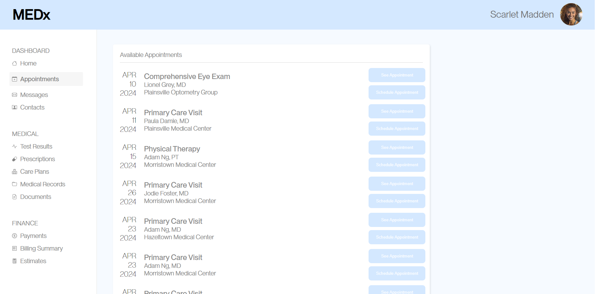
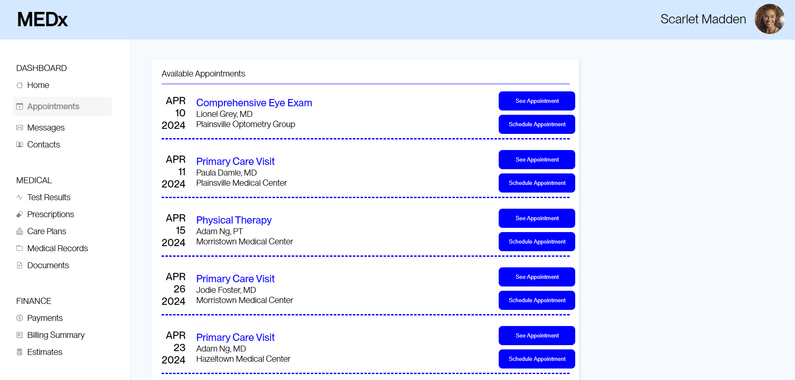

Goal:
We needed to conduct A/B testing for a provided site that had some notable issues with it. We were tasked with finding the
schedule appointment button corresponding to a particular care provider at a certain location. Then we took some time to edit the site to improve the user experience
and curb some of the issues we encountered in our previous task. Below are images, from top to bottom, of the original site and the altered one.


A number of changes were made in this second version. Most notably picking better button colors for improved contrast.
Additionally, the dashed blue lines separating the appointments help visually segment which buttons correspond to which appointments, which was a major issue with the original version. Lastly, a
darker color for some of the other text around the site helps again with issues of poor contrast.
Procedure:
To understand if the edited version was in fact an improvement, we took metrics on both the first version of the site as well as the edited
version running the same task. These metrics can be used later in the analysis portion of the A/B testing process. These metrics are:
- Time on page
- Time to first click
- Distance mouse moved
- Number of clicks
- Misclick rate
- User task completion rate
Analysis:
So now that we have conducted some testing between the two versions I can begin breaking down the data and gleaning some insights from that data. I focused
on three metrics in particular to determine whether my updated version (version B) was "better" than the original (version A).
- Misclick rate
- The frequency with which users click something else on the page before finding the correct button for the task.
- Time on page
- Time spent on the webpage for each user group.
- Number of clicks
- The total number of clicks a user makes to complete the task.
Hypotheses:
Each set of hypotheses includes a null hypothesis and an alternative hypothesis. The null hypothesis is one that can be supported by data that in these cases shows
there was no change or a statistically insignificant amount of change between the original version and the updated version. The alternative hypothesis essentially says the opposite in that it is supported by data that shows
there was indeed a statistically significant change between the two versions based on the metrics outlined above.
- Misclick Rate
- Null Hypothesis: The misclick rate between version A and version B are the same.
- Alternative Hypothesis: The misclick rate on version B is lower than that of version A.
- Alternative Hypothesis Reasoning: The alternative hypothesis will be supported because the clarity of separation between appointment “rows” is more pronounced and the buttons are more easily discernible, thus reducing misclicks.
- Time on page
- Null Hypothesis: The time on the page metric between version A and version B are the same.
- Alternative Hypothesis: The time on the page metric of version B is lower than that of version A.
- Alternative Hypothesis Reasoning: The alternative hypothesis will be accepted because the improved spacing, including the separation line, as well as the newly contrasted buttons will make the process of selecting an appointment much quicker.
- Number of clicks
- Null Hypothesis: The number of total clicks between version A and version B are the same.
- Alternative Hypothesis: The number of total clicks on version B is lower than that of version A.
- Alternative Hypothesis Reasoning: The alternative hypothesis will be accepted because the improved layout of all the elements makes it easier for the user
to separate which buttons correlate to which care provider and therefore will be able to find the doctor and location they need with improved ease, and less clicks overall.
Statistical Tests:
For each of my hypotheses I chose a one tailed t-test to analyze my results because
I wanted to know specifically if version A is less than or greater than version B. whether it be based on misclick rate, amount of time on page, or number of clicks the test applies to all cases.
The analysis of whether X bigger or smaller than Y is the only thing I am interested in at this moment, and is exactly what the one tailed T-test provides. I will be analyzing the data mainly in terms of a p-value (indicating the chance the two versions are the same)
as well as the averages of the two data sets.
- Misclick Rate
- After analyzing the data between the two versions I found in the original site, about half the users misclicked while trying to complete the task, whereas on the updated version no users misclicked.
Furthermore the p-value showed that there is a 0.01% chance that the two versions are the same. So there is statistically significant information supporting the alternative hypothesis and rejecting the null hypothesis.
- Time on page
- The average time on the page for the original version was 29.4 seconds and the average time on the altered version was 10 seconds. Additionally,
the p-value indicated .0004% chance the two versions yielded the same results. This gives me confidence to say the null hypothesis does not have statistically significant information to support it, but the alternative hypothesis does have that support.
- Number of clicks
- The average number of clicks for the original site was 6.4 and the average for the edited version was 2.1 which shows a large improvement. Again the p-value indicated a very low
chance of the two versions yielding similar results with only a .009% chance. With this information I can assert that there is statistically significant information to both reject the null hypothesis and affirm the alternate hypothesis.
Summary:
Overall the changes made through making the buttons and site text have higher contrast, as well as creating easily discernible sections
for appointments I was able to make a measurable positive impact on the site. Average time spent on the task, misclicks, and total number of clicks all decreased. This allowed users to quickly and accurately
complete their task with some small but impactful design decisions.
Additional Statistics:
- Misclick Rate
- Avg(A): 0.05333333333
- Variance(A): 0.2666666667
- Avg(B): 0
- Variance(B): 0
- Degrees of Freedom: 14
- T-Score: 4
- P-Value(A\B): 0.9993419754
- Time on page
- Avg(A): 29411.25
- Variance(A): 341951899.9
- Avg(B): 10039.2
- Variance(B): 7266897.029
- Degrees of Freedom: 15.67911481
- T-Score: 4.143675468
- P-Value(A\B): 0.9996029734
- Number of clicks
- Avg(A): 6.4375
- Variance(A): 40.2625
- Avg(B): 2.133333333
- Variance(B): 0.1238095238
- Degrees of Freedom: 15.0983892
- T-Score: 2.708866556
- P-Value(A\B): 0.9919514013